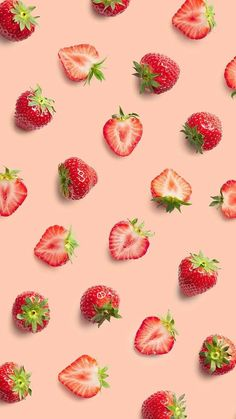
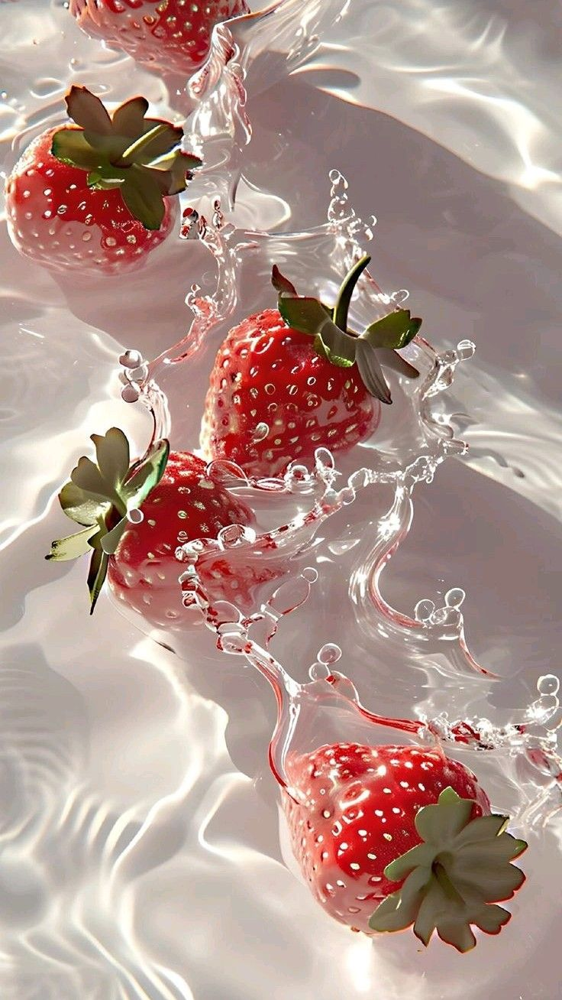

strawberry
Клубника - это ягода красного цвета, которая имеет множество полезных свойств для здоровья.
Она богата антиоксидантами и витаминами, такими как витамин С и К.
Клубника также содержит вещества, которые могут помочь снизить уровень холестерина в крови и улучшить функцию сердца. Она имеет приятный вкус и широко используется в различных десертах, напитках и салатах.


- Клубника - единственная ягода, которая имеет свои семена на поверхности, а не внутри плода, таким образом, она является не фруктом, а настоящей ягодой.
- Существует более 600 видов клубники, каждый из которых имеет свой уникальный вкус и аромат.
- Клубника – один из немногих фруктов, которые продолжают созревать после того, как их собрали. Они могут даже улучшить свой вкус и аромат, если оставить на несколько дней при правильных условиях.
- Клубника содержит много витамина C. В 100 г клубники содержится около 60 мг витамина C, что составляет более 100% суточной нормы для взрослого человека.
- Клубника может быть полезна для сердца. Она содержит антиоксиданты и противовоспалительные соединения, которые могут помочь поддерживать здоровье сердечно-сосудистой системы.
- Клубника не только вкусная, но и питательная. Она низкокалорийна и богата клетчаткой, что делает её отличным выбором для диеты.
- Рекорд по сбору клубники! Самый большой плод клубники весил 250 граммов и был выращен в Японии в 2015 году.
Links:
Яндекс
Википедия